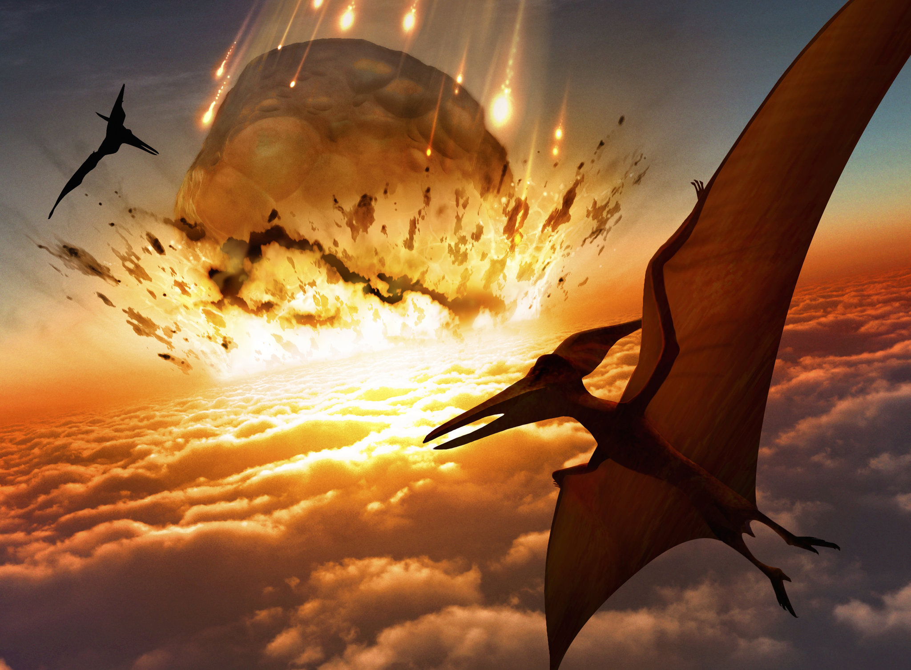

Los dinosaurios, magníficas criaturas que dominaron la Tierra durante millones de años, han fascinado a la humanidad desde su descubrimiento. Sin embargo, su reinado en el planeta llegó a un abrupto y misterioso final hace aproximadamente 65 millones de años. Este evento catastrófico, conocido como la extinción de los dinosaurios, es uno de los acontecimientos más intrigantes en la historia de nuestro planeta y ha generado innumerables teorías y especulaciones.
La extinción de los dinosaurios es uno de los eventos más importantes en la historia de la Tierra. Este evento tuvo un impacto significativo en la evolución de la vida en la Tierra.
CAUSAS DE LA EXTINCIÓN
Existen varias teorías sobre las posibles causas de la extinción de los dinosaurios. Una de las teorías más aceptadas es la hipótesis del impacto de un asteroide o cometa. Según esta teoría, un objeto del espacio impactó la Tierra, generando un evento catastrófico que alteró el clima y el medio ambiente de manera drástica.
Impacto de un asteroide o cometa: Una de las teorías más aceptadas es la hipótesis del impacto, que sugiere que un objeto extraterrestre, como un asteroide o cometa, golpeó la Tierra hace aproximadamente 65 millones de años. Este impacto habría generado un cataclismo global, causando incendios masivos, cambios climáticos extremos y un bloqueo de la luz solar debido a la liberación de polvo y gases en la atmósfera. Este evento habría resultado en un invierno nuclear prolongado y en la perturbación de los ecosistemas, lo que llevó a la extinción de muchas especies, incluidos los dinosaurios.
Actividad volcánica masiva: Otra teoría propuesta es que las erupciones volcánicas masivas, como las del Traps del Decán en la India, contribuyeron significativamente a la extinción de los dinosaurios. Estas erupciones habrían liberado grandes cantidades de gases de efecto invernadero y aerosoles en la atmósfera, lo que resultó en un cambio climático drástico y en la destrucción del hábitat.
Cambios climáticos: Los cambios climáticos graduales también pueden haber contribuido a la extinción de los dinosaurios. La Tierra experimentó fluctuaciones climáticas naturales a lo largo del tiempo, y es posible que cambios como el enfriamiento global o el calentamiento repentino hayan afectado los hábitats de los dinosaurios y sus fuentes de alimento.
Enfermedades y epidemias: Algunos científicos sugieren que enfermedades o epidemias podrían haber desempeñado un papel en la extinción de los dinosaurios, aunque la evidencia concreta es limitada.

Es importante tener en cuenta que es posible que la extinción de los dinosaurios no haya sido causada por un solo evento, sino por una combinación de factores, posiblemente exacerbados por una cadena de acontecimientos interconectados. A medida que los científicos continúan investigando y recopilando evidencia, es probable que surjan nuevas ideas y perspectivas sobre este intrigante misterio de la historia de la Tierra.
IMPACTO EN LA VIDA EN LA TIERRA
La extinción de los dinosaurios abrió el camino para la diversificación de mamíferos y aves. Muchas especies de animales y plantas que existen hoy en día evolucionaron y prosperaron después de la desaparición de los dinosaurios. Este evento marcó el comienzo de una nueva era geológica, el Cenozoico, también conocido como la era de los mamíferos.